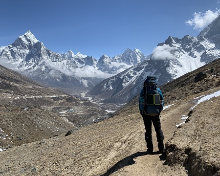
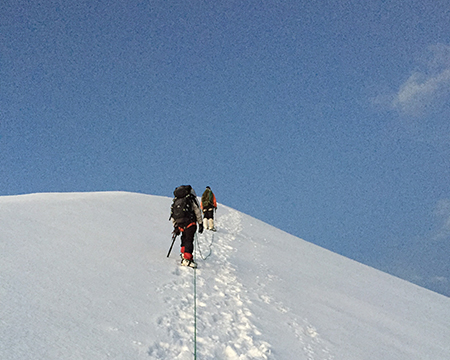
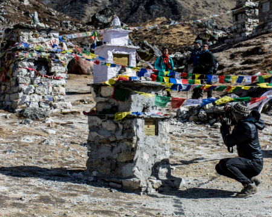
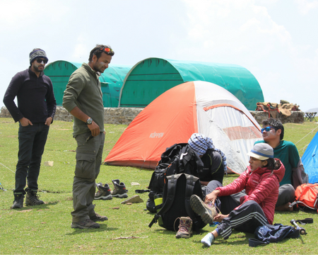
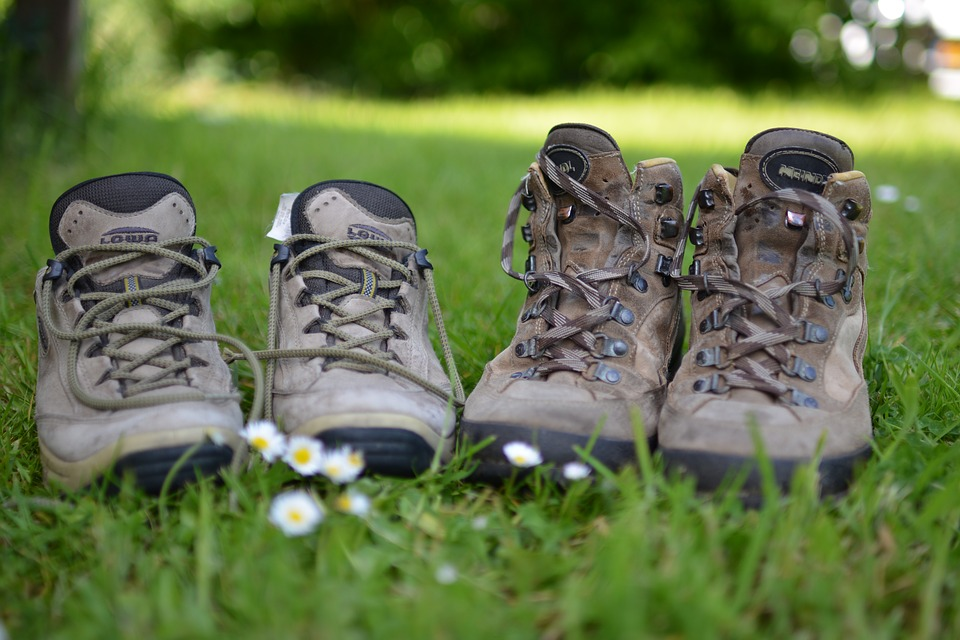

Everest Base Camp with Gokyo Ri and Gokyo Lakes
A more dramatic trail of the Everest Base Camp Trek
Available Batches
Available Batches

Brief Description


Brief Itinerary
Detailed Itinerary
Day 1
Arrive at Kathmandu (4,593 ft)
Reach Kathmandu and report to the designated hotel that has been booked for you. You can explore the place by visiting the famous Boudhanath temple, Pashupatinath temple, Thamel, etc. Thamel is Kathmandu’s trekking and tourism heartbeat, and draws you in with its labyrinth of narrow corridors shaded by prayer flags strung above. Around every corner are festive restaurants, bookstores full of trekking maps and handmade crafts, cafes waiting to shelter you from the occasional afternoon thunderstorm and every piece of trekking gear you could possibly hope for available for last-minute purchases before you head to the mountains. You will get the exact address of reporting hotel and contact info 4 days prior to your departure from India.
Day 2
Flight : Kathmandu to Lukla (2,850 m); Trek: Lukla to Phakding (2,852 m) - 7 km
Fly over the mountains into Lukla in the Khumbu region from Kathmandu. Make sure to snag a seat on the left side of these tiny planes, the view out the window is one you’ll never forget. Lukla is a small village with no road, only reachable by flight or foot. You walk straight out of the airport, across the cobbled stone footpath of the village and off into the forest trail, officially starting your first day of trekking. Just before exiting the village, you will be required to obtain your first of two permits and present them to the checkpost. Keep these handy, as you will need them again. Today’s trek starts this difficult journey off to an easy start, descending 300m right away and then slowly climbing just under 100m to meet the rest point of Phakding for the night. Along the way, you will pass countless mani walls painted on the rocks lining the trail and boulders carved with Tibetan Buddhist prayer inscriptions. Many prayer wheels can be found along the way, instructing you to spin them clockwise to be cleansed of sin and be given an auspicious path. Overnight stay in guesthouse in Phakding.
Day 3
Phakding to Namche Bazaar (3,440 m) - 11 km
This will be the first introduction to difficult terrain on the trek. Start by walking along the banks of the Dudh Kosi, crossing it twice on the high suspension bridges Nepal treks are famous for. The trail is a series of small, repeated ascents and descents, following along the river and again crossing the engraved Buddhist stones characteristic of the area. Stop for lunch at the village of Monjo, which is also the gateway to Sagarmatha National Park. Here, you will acquire your second of two permits, which again will be checked later on. After entering the park, descend along an enormous wall painted sky-high with prayers written in Tibetan to the Bhote Kosi river arriving at Jorsalle village. Then the fun begins. After one final stroll along the beach-like riverbank, the trail gets steeper from here passing through dense forests. After a while cross the last suspension bridge for today, dangling spectacularly high above a sharply-descending gorge. From here, you ascend a forested 600m to Namche Bazaar, the administrative and trade capital of the Khumbu region. If the weather is clear you might get your first view of Everest at the rest point along the way.
Day 4
Namche Bazaar to Khumjung (3,790m) - 3 km
Today we ascend a short, but steadily inclined trail to Khumjung, the village above Namche Bazar famous for its astounding views of the surrounding peaks and valleys below. We keep this day short on purpose for acclimatization reasons. Enjoy the views in the afternoon and evening.
Day 5
Khumjung to Dole (4,050m) - 9 km
We begin with a gentle descent before rising back out of the valley, the first time you will be officially off the main EBC trail. The difference should be noticeable, as you will pass fewer people and have more of the trail to yourself. The trail rises through scrub and trees rounding the side of the mountain upwards until you reach Mongla, a sweet little village perched stunningly on a ridge that divides two valleys, an old stupa welcoming you as you arrive. After a break here, the trail descends 350m through forested switchbacks until it abruptly begins to climb again, 400m back up to reach Dole. You pass through more forests, rhododendrons and by half-frozen waterfalls.
Day 6
Dole to Machhermo (4,400m) - 5.5 km
After a very short descent to cross a stream, you begin the day’s climb along the shrubs and small trees of what has now become a more barren landscape. Today marks your first day above the treeline, and the trail here is mostly quiet, save the river thundering far below you to your right. Keep an eye out for Nepal’s national bird, Danphe, which has been spotted in this area. It’s hard to miss, the bird’s tail is an iridescent rainbow. The climb takes you up 400m before descending another 50m down into Machhermo.
Day 7
Machhermo to Gokyo (4,765m) - 7 km
You will climb a lot today, but the views are stunning. The 500m you ascend follow alongside the river gorge below. Pass by yaks grazing on up to cross the bridge over the river, which drains from the first of the Gokyo lakes. After a short climb, we will reach the first of the Gokyo Lakes - Longpongo and soon after that the second one - Taboche Tsho. From here, a continued gradual incline takes us to Gokyo village at the banks of the Dudh Pokhari lake with Cho Oyu in the back.
Day 8
Day Hike to 4th and 5th Gokyo Lakes
Today, we will take an acclimatization day at Gokyo. We will do a day hike to the 4th and 5th Gokyo Lakes. Return to Gokyo for the night.
Day 9
Gokyo to Gokyo Ri (5,357m) and Dragnag (4,660m) - 7 km
Today, we will start with a steep, tough climb to the 5350 m Gokyo Ri peak which offers majestic views of four of the world's highest peaks - Cho Oyu, Everest, Lhotse and Makalu along with Ngozumpa Glacier. From there we return to Gokyo, collect our belongings and head toward the village of Dragnag via crossing the Ngozumpa Glacier. The day begins with an immediate ascent to the ridge overlooking Gokyo - enjoy the last view of the village, lake, Gokyo Ri and Cho Oyu before descending the terminal moraine onto the glacier. Crossing this section will be a repeated series of ascents and descents around the crevasses of the glacier until you reach the other side. From here, we climb the terminal moraine once more and descend gradually into Dragnag for the night.
Day 10
Dragnag to Dzongla (4,800m) via Cho La Pass (5,350m) - 8 km
Today will test you. We will begin very early in order to cross Cho La Pass and descend into Dzongla for a well-deserved rest. Many argue that this is the most difficult day of the trek, and we begin by following the river and ascending 350m up and out of this valley, immediately descending 150m again down into the next, where we cross moraine, hoping over boulders and ascending again in spurts.The ascent to the pass can than be seen, and looks like nothing more than an enormous wall of boulders. This climb is arduous and slow - make sure to follow your guide, as there is no easily visible trail. Toward the top, microspikes may be needed on sections of more firmly packed snow until you reach the top. Down the other side is a quick, steep descent onto the glacier, which we will traverse until we meet the steep, rocky descent section on the other side. Til here, it should have taken approx. 7 hours. This section of boulders descends sharply for 50m before becoming a relatively more gradual ridgeline descent before meeting the valley floor. Enjoy your rest at Dzongla tonight - you’ve earned it.
Day 11
Dzongla to Lobuche (4,950m) - 6 km
Hope for clear skies today, because the views as you ascend out of the riverbed lying below Dzongla are one of the trek’s best. As you round the mountain, the huge lake of Cholatse Tso glitters far below you, and further on, Ama Dablam reveals herself alongside a host of other huge mountains. You’re going to want to keep your camera on you today. Once this panoramic traverse is complete, we reconnect with the main EBC route and climb a sporadic 200 meters uphill to find Loboche.
Day 12
Lobuche to Gorakshep (5,150 m) Evening hike to Kalapatthar (5,545 m) - 7 km
Today is split into two parts, Lobuche to Gorakshep and the round-trip hike from Gorakshep to Kalapatthar. The way from Lobuche to Gorakshep consists of gradual ups and downs alongside the Khumbu glacier for the first section. For three kilometers, the trail rises slowly and steadily, before descending 50m down to the glacier of a subsidiary valley. After ascending again sharply from here, you get your first full-fledged view of the Khumbu Glacier itself, and you know Everest is close. Around the ridge, you descend and reach Gorakshep by lunch. It is a small village, only functioning during tourist season. From here, you will continue on up to the top of Kalapatthar for an excellent view of Everest herself. Return to spend the night in Gorakshep.
Day 13
Gorakshep to Pheriche (4,371 m) after Kala Patthar (5,645m) 6-7 Hours
Today is also split into two parts. First, you will hike to EBC with your daypack. The trail is a mix of descent with slightly more ascent, and after an hour and a half length hike, you find yourself on a ridge with the Khumbu Glacier below you to your right. On the glacier, you will see colorful tents resting below Lhotse, Nuptse and Everest itself, and you know you’ve made your destination. A short descent down the lateral moraine and you’re on the glacier itself, standing below the tallest mountain in the world. We will return to Gorakshep to gather our belongings, and then retrace our steps back down to Pheriche.
Day 14
Pheriche to Namche Bazaar (3438 m) 6-7 Hours
Today will be a welcome break to the constant ascent of the last two weeks. The trail begins for several kilometers in a gradual descent to Dughla, where you will find various memorials to Sherpas and climbers who died on Everest. The day’s views include Pumori, Cholatse, Nuptse and Lobuche East as you descend. After descending a steep 250m section to the small village of Thokla, you’ll continue on down to the valley floor, passing through meadows, yaks. The hike continues on slightly further across shrubby terrain until you reach Pangboche, from where you have the best view of Ama Dablam you will get the entire trek. From Pangboche, a steady descent through forests takes you to the valley floor and across the river, after which, you climb right back up past Deboche to Tengboche. Tengboche is home to the largest monastery in the Khumbu region and is home to the Rimpoche of Tengboche. Whether its for spiritual or aesthetic purposes, a visit inside its ornately painted walls will leave you in awe. Again on the other side of Tengboche, we will descend 550m down through prayer wheels, cross another river, and again ascend 300m. You’ll pass old stupas, arranged among flags at scenic points along the way until Kyangjuma, a tiny settlement with a few lodges selling woolen shawls, yak cheese and other local items. From here comes a final stretch of relatively gentle ups and downs on a stunningly exposed trail that wraps around the mountain, with low tree growth allowing for panoramic views of distant valleys and imposing mountains.
Day 15
Namche Bazaar to Lukla (2,850 m) - 18 km
Retrace the trail back to Lukla. First, the steep descent down from Namche Bazar followed by a long section of repeated up’s and down’s before your climb to Monjo among the mani stones. You will check out here with the permit cards you received almost a week ago and continue on through Phakding, until the final ascent up and out of the forests into Lukla village.
Day 16
Flight : Lukla to Kathmandu (1,330 m)
Fly back to Kathmandu today. Remember, grab the right side of the plane now for those fantastic views! You can rest and relax throughout the day at the hotel. If you want then you can explore the market and purchase some gifts or nepalese goods for your closed ones. Overnight stay in Kathmandu.
Day 17
Departure from Kathmandu
The trip ends in Kathmandu today. You can stay and explore more of Nepal, or plan your departure from Kathmandu. However, you are advised to keep a day as buffer in Kathmandu in case your flight from Lukla gets delayed due to unpredictable weather conditions, which happens regularly. No matter your post-trek plans, congratulations! You just accomplished something monumental - enjoy the feeling that comes with it.
What's Included
- Kathmandu /Ramechap domestic airport transfers for Lukla flights.
- Accommodation in a standard hotel at Kathmandu on a twin share basis (2 nights).
- Accommodation during the trekking period, in local mountain lodges, called Tea House on sharing basis (14 nights).
- Domestic return flight tickets (Kathmandu/Ramechhap- Lukla - Ramechhap/Kathmandu).
- All necessary paperwork and trekking permits (National Park Permit, Khumbu Permit).
- Mountaineering course certified Bikat's Trek Leader for group size of 6 & above only.
- Staff costs including their salary, insurance, equipment, domestic airfare.
- Medical kit (carried by your trek leader).
- All government and local taxes.
- Experienced and Certified guide
- Kathmandu Airport Transfer only on Day 1 & 17 only.
- Three meals (Breakfast, Lunch & Dinner) a day during the trekking (open menu to choose one item per meal from the menu). Order more at your own cost.
- Backpack offloading upto 10 Kgs.
What's Not Included
- Travel expenses to reach and return from Kathmandu.
- Anything not specifically mentioned under the inclusions section.
- Additional accommodation and food expenses if trek gets delayed due to weather, flight cancellation, health, or any other reason.
- Personal expenses (phone calls, laundry, bar bills, battery recharge, extra porters, bottle, or boiled water, shower, etc.).
- Health Insurance, Personal Insurance, and other travel insurance.
- Expenses for evacuation and rescue operations due to natural calamity, mishaps, injury, or any health problem.
- Nepal visa fee (if applicable).
- Tips for guide(s), porter(s).
- Gaiters, microspikes and sleeping bags (wherever necessary) are not included and thus have to rented from Kathmandu by you.
Are you Eligible for this Adventure?
Everest Base Camp with Gokyo Ri is 128 kilometers of sheer awe, divided into approximately 8-10 kms per day. It takes you to an elevation of 5,545M. Given the duration of the trek and the altitude it continually keeps you in, sound fitness and some experience in the Himalayas is essential before you decide to go on this journey of a lifetime.

BRS Level Required
This makes it mandatory for you to have high-altitude experience of preferably multiple treks marked at level 4 on the BRS. The altitude, the terrain and the nature of the climb demand a certain level of skill and a need for you to be aware of how your body reacts to the various features of a high altitude environment.
If you do not know what level of BRS trek would suit you best, worry not! Fill out this Form:

we will send you a progression chart to help you comfortably get out of your comfort zone in order to level up and ultimately reach your highest potential in the big, bad world of outdoor adventure.
Packing List
This is a list of essential items for individuals doing the trek with Bikat Adventures. This list contains only those items which the participants are required to bring with them. The list excludes those items which are provided by Bikat Adventures on the trek. We have divided the items into five categories. All the items in the list are essential except for those marked as optional.
Trekking Gear
- Ruck sack bag with rain cover. Qty -1
- Day Pack Bag - Recommended for treks with summit day
- Head Torch with spare Batteries. Qty -1
- U V protection sunglasses. Qty -1 Here is how you can choose the best sunglasses for trekking.
- Water Bottles: 2 bottles of 1 liter each
Footwear
- Non-skid, deep treaded, high-ankle trekking shoes Qty -1
- Pair of light weight Slipper/Sandals Qty -1
Clothing
- Quick Dry Warm lower or Track Pants. Qty - 2
- Full sleeves T-shirts/ Sweatshirts. 1 for every 2 days of trekking
- Pair of thick woolen socks. 1 pair for every two days of trekking
- Thermal Body warmer Upper & Lower. Qty-1
- Undergarments. Qty - 1 for every day of trekking
- Warm jacket closed at wrist & neck .Qty-1
- Full sleeves sweater. Qty -1
- Rain wear ( Jacket & Pants ) . Qty-1
- Pair of waterproof, warm gloves. Qty-1
- Woolen cap. Qty-1
- Sun shielding Hat. Qty -1
Toiletries
- Personal toiletries kit (Small Towel, Toilet paper, paper soap, Bar soap, toothbrush, toothpaste, cold cream, etc.)
- Sun screen lotion small pack. Qty -1 Here is your Sun Protection 101 to stay safe in the bright sunny outdoors.
- Lip Balm small pack. Qty-1
Utensils
- Small size, Light weight & Leak proof lunch box. Qty-1
- Plate. Qty- 1
- Spoon.Qty-1
- Tea/Coffee (plastic) Mug.Qty-1
Miscellaneous
- Camera (Optional)
- Carry your medicines in plenty in case you have any specific ailment. Consult your doctor before joining the trek.
- Dry fruits, Nuts, Chocolate bars (Optional)
Frequently Asked Questions
Everest Base Camp with Gokyo Ri and Gokyo Lakes is suitable for trekkers with prior experience, having completed at least one BRS 4 level trek or equivalent.
If you can Jog/Run for 5 kms in 25-30 mins, you are ready to take on this trek. Once a week, you can practice running 10 kms in an hour or so to improve your endurance further. In addition to this, you can also add resistance workouts to your schedule like squats, lunges, push ups etc.
If you cannot do the above, there’s no need to worry. It is important to remember that it’s all about practice. Get on a training schedule and we can assure you that you will meet these standards in a matter of a few months.
A certain level of fitness and physical endurance are required to take on any high-altitude trail in the Himalayas. Basic knowledge of ascending and descending on steep gradients, high-altitude attire and layering and mountain mannerisms will be helpful.
The minimum age limit is 13 years. However, minors between 13 to 17 years of age should be accompanied by their parents/ guardians. If you are above the age of 60, kindly carry a medical certificate from your doctor that deems you fit for adventure activities like trekking.
The Everest Base Camp Trek is located in the Solukhumbu district of Nepal, in the Sagarmatha National Park. The trek starts from the town of Lukla, which can be reached by a short flight from Kathmandu, the capital city of Nepal.
The Everest Base Camp Trek is one of the three most sought-after treks in Nepal, alongside the Annapurna Circuit Trek and the Annapurna Base Camp Trek and for good reason - it’s bringing you to the foot of the tallest mountain in the world, afterall!. Throughout the two-week-long trek, you are immersed in the high-altitude zone, enjoying incredible views of majestic peaks such as Everest, Lhotse, Makalu, Nuptse, Pumori, and Ama Dablam. The Gokyo Lakes variation of the classic EBC trail adds an ascent of Gokyo Ri peak, Cho La pass and five glacial lakes! All in all, the Everest Base Camp Trek offers an unforgettable experience in one of the most stunning landscapes on the planet. As you walk amongst the highest mountains in the world, the trek takes you through the vibrant culture and lifestyles of the high-altitude villages in Nepal. The journey involves crossing some of Nepal's longest suspension bridges, traversing over the deepest gorges adorned with colourful prayer flags, and passing through other amazing natural wonders.
The Everest Base Camp Trek can be demanding with several challenges for trekkers. It involves ascending to an altitude at 5,545M, which can lead to altitude sickness, a serious concern for some. The terrain can be rugged and uneven, with steep ascents and descents, rocky paths, and narrow trails. Weather conditions in the Himalayas are unpredictable and can change rapidly, bringing rain, snow, and even hailstorms. Therefore, trekkers must prepare for any weather eventuality.
The best months for the EBC trek are March to May and October to December.
The accommodation for all days of the trek will be provided in a guesthouse or lodge, generally called tea houses in Nepal.
During the spring season (March to May), temperatures at the Everest Base Camp can range from 15°C during the day to -10°C at night.
During October to December, temperatures at the Everest Base Camp can range from 10°C during the day to -10°C at night. This is generally the most popular time to visit because of the clear skies and favorable weather conditions.
Everest Base Camp Trek is not technically challenging, however, it is extremely physically demanding. It involves traversing difficult terrain, patches of rugged and uneven land, with steep ascents and descents, rocky paths, and narrow trails, which can be challenging to navigate, especially in adverse weather conditions. However, no specialised climbing or mountaineering skills are required.
The base for EBC trek is Kathmandu. To get to Kathmandu from Delhi, you can take one of the following options:
By Air: There are multiple flights daily connecting Delhi and Kathmandu.
By Road: The road distance between Delhi and Kathmandu is 1,152 km.
By Rail: Multiple trains are operating daily from Delhi to Gorakhpur near the India - Nepal border. From Gorakhpur, you will have to take a bus to Sunauli across the border. From Sunauli, you will have to take another bus to Kathmandu.
There is 3G connectivity for local network NCell for most of the Everest Base Camp trek. And you can also get wifi facilities at campsite on paid basis. Read more: Comprehensive Guide for Trekking in Nepal
The nearest ATMs are located in Kathmandu.
You will have to arrive at Kathmandu on your own. It is a well established tourist location and is easy to reach.
We will stay the night in Kathmandu on Day 16. Plan for your departure from Kathmandu early morning on the next day.
You will be in Kathmandu at the beginning and end of this trek. There are a number of places to explore in Kathmandu - walk through the old city, explore the streets of Thamel, visit the famous Swayambhunath and Pashupatinath temples, take thangka painting workshops or learn how to cook local cuisine. You can also drive or fly to Pokhara in Central Nepal and explore the Annapurna and Dhaulagiri regions - rife with vast trekking options as well! Another must-see attraction is the Royal Palace, the site of the infamous 2001 massacre of the Royal Family by the then Crown Prince, and now converted into the Narayanhiti Palace Museum.
Safety equipment used for rescue such as static rescue rope, seat harness, carabiners, pulleys is carried by our trek leaders. Gaiters, microspikes and sleeping bags (wherever necessary) are not included and thus have to be rented from Kathmandu by you.
We don’t provide rentals in Nepal. But rental facilities are available in the market.
Rental facilities are available in the market.
You’ll have to return all the rented equipment to the shop from where you rented them.
For a detailed list, check the Packing List section on this page.
You can buy your trekking necessities from Kathmandu. There may be some items available at shops in Namche Bazaar, or other villages on the trail as well. However we recommend that you do not leave any essential purchases for the last minute.
Although not recommended, you can off load your bag at an additional cost. Add a request while making your booking for the trek and it can be arranged.
(Note: We don’t recommend offloading because the extra resources on a trail - ponies or porters depending on the trail - means extra load on the environment which can easily be avoided. It also goes against the spirit of trekking by eliminating a level of endurance and discomfort from the experience which are factors at the very heart of an outdoor adventure activity.)
You can leave your extra luggage in hotel cloak rooms on a paid basis.
Like any trek in Nepal, meals are not part of the trek fee. All meals will have to be purchased by the trekkers at the tea houses where we stay. The tea houses in Nepal offer a wide variety of healthy and nutritious food. Read more: Comprehensive Guide for Trekking in Nepal
Since we will be staying at tea houses, these accommodations have proper toilet facilities. Depending on the tea house, however, some may have shared toilets and some may have private toilets attached to the rooms.
In case you get your period on the trail and don’t have sanitary napkins, our trek leaders can provide them to you. If you need any other kind of assistance, you can let our trek leaders know. Irrespective of gender, our leaders are gender sensitised and equipped to assist you in any way you need them to.
Our team carries a first aid kit and all the basic medicines required during the trek. They are equipped to be the first responders in case of any injury or health-related issues. For higher expeditions, we also carry a HAPO Bag and oxygen cylinders to tend to any altitude-related health conditions.
You will get electricity at the tea houses. But these regions are prone to power cuts so it is better to carry your power bank as a backup.
A copy of your ID Proof and Medical Certificate are the mandatory documents required for this trek. (Soft copies for all of these are to be sent to us & originals should be on your person while on the trek.)
Yes, insurance for any high-altitude activity is highly recommended to cover for the cost of rescue, evacuation and any other emergency service required as well as to cover for medical cost in case of injury or illness during the trek. You can buy it on your own. Alternatively, if you want us to buy it on your behalf, you can speak to our post-booking team and they will arrange it for you. They will send you a payment link once the insurance has been purchased. Read more: Comprehensive Guide for Trekking in Nepal
Yes, there are multiple permits required for this. We obtain the permits on every trekkers’ behalf. All the permit costs are included in your trek cost.
Yes, you will receive e-certificates (of completion) after the trek. It will bear your name, the trek, and the maximum altitude you achieved on the trek. In case you were unable to finish the trek, you will get a certificate of participation.
On completion of the trek, the certificate will show up on your dashboard on our website. You can download it directly from there.
Foreign nationals need a Visa to enter Nepal. For some countries, the visa may be obtained on arrival. Citizens of China and SAARC countries, which includes India, a tourist visa can be obtained without a charge (visa fees) but for other countries there is a fee depending on the duration of the stay. Visit http://online.nepalimmigration.gov.np/tourist-visa to get all the information on the required processes based on your home country.
This does not apply to you if you are an Indian citizen. In case you don’t hold an Indian passport, you will need to check online for Visa application rules based on your home country. Read more: Comprehensive Guide for Trekking in Nepal
If you are not an Indian citizen, you will need Travel Medical Insurance to travel to the country. Please make sure that your insurance policy is valid for the altitude you are going to and the activity you are undertaking, to cover risks during the trek. The insurance policy provided by Bikat Adventures does not cover foreign nationals. So, please do not purchase it while making the booking from our website.
The Nepal Himalayas are home to Mount Everest, the highest mountain in the world, which attracts thousands of visitors each year. As a trekkers’ paradise Nepal has countless trekking trails which take you through all kinds of terrain spread out across Nepal. A country of warm people, eight of the fourteen tallest mountains in the world, diverse geography, and a rich culture with multiple languages, ethnicities and religions; the first thing you notice on entering Nepal is that it is extremely welcoming and full of colour – a country with a lot of heart.
You can make the booking any time depending on availability of slots in our fixed departure batches. You will get this information at the top of this page.
A Basic Mountaineering Course certification from one of the five recognized mountaineering institutes in India is a minimum requirement to join our team. Our field experts are also trained in basic medicine and first-aid response. We also conduct on-ground training for our staff once a year as a refresher for old skills and to learn some new ones. During this training that we call APW (Adventure Professional Workshop), our leaders learn close to 25 topics and techniques of rescue which are not covered in the BMC and AMC courses. For practical training, we simulate on-ground situations to prepare them for quick thinking and quick response during emergencies.
We follow a rigorous regime of hiring and training our experts on the field. Each trek leader is a certified mountaineer with years of experience in the field. The interview process to bring a trek leader on-board is close to 6 months long where we assess various skills as well as personality traits of an individual. They also go through an on-field assignment as part of the hiring process. Trek leaders also progress in time from leading easier treks before advancing to the more difficult ones where the stakes are higher. For detailed information on our selection process, please visit Forerunners - The Making Of A Trek Leader
It absolutely is. We recognize, value and embody the ideology that the world of outdoor adventure can benefit from diversity. We make it our mission to create outdoor spaces as equally accessible and safe for all genders as possible. We also encourage women leaders in the outdoors and all of our staff (irrespective of gender) is gender sensitised. As for accommodation, in case there are no other women on the trek, a solo female trekker is provided with a separate single-occupancy tent.
Our batch sizes for Everest Base Camp Trek are capped at 15 with the trek leader to trekker ratio of 1:8.
In addition to their qualification, our trek leaders are trained to tackle any and all kinds of sudden conditions that may present themselves on ground. During our recce stage, we study the trail in great detail and map out rescue routes before opening it up for our trekkers. We also have local support staff stationed in each area to arrange for emergency services at the place of need as quickly as possible.
We mobilise road rescue efforts where our trek leaders bring the person to be rescued down to the trailhead of the trek from where a car can take them to the nearest healthcare facility. The cost of rescue is not covered in the trek fee that we charge. It must be borne by the participant. However, if you opt for the insurance the cost of rescue operations can be claimed from the Insurance company on production of valid proof e.g. doctor’s prescription & hospital bills etc. Please note that Bikat Adventures is only a facilitator & not a party in the Insurance policy. You need to raise the claim request directly with the Insurance company. Bikat Adventures is not responsible for any rejection of claim. You can call the insurance provider directly for any clarifications related to the Insurance policy. Although not mandatory, we recommend buying the insurance. You don’t necessarily have to get the insurance we provide, you can pick an Insurance company of your choice and get a policy directly from them. If you need more information on the terms and conditions of the insurance policy, get in touch with our customer support team.
All the gear used on our treks and expeditions is tried and tested, maintained for good quality and is overall top notch in quality and condition. We are continually looking to obtain the best of everything there is in the market so as to ensure optimum safety.
That will depend on the nature of your medical condition. Do give us a call, and one of our people will help you understand what is best for you. If not this, we are sure there would be plenty of other options you can choose from our vast portfolio to pick as your next adventure.
We have rolling camps on all our trails. To know why we are strictly against the concept of Fixed Camping, read Reasons to Ban Fixed Camping in Himalayas
This is a complex question and has a compound answer. The simple response is that because it is bad for the environment which we dearly love but if you are interested in a more detailed response to this question, please read Reasons to Ban Fixed Camping in Himalayas
There are a number of measures that we take to prevent overcrowding on some of the most popular trails. Some of them are capping our group size at 15, capping the number of trekkers on a trail to 250 per season, constantly looking for newer trails and routes to spread the crowd around and providing incentives to our trekkers to try unexplored territories with us. We put in place the system of dynamic pricing, which is the first of its kind in the trekking industry, which incentivises trekkers to choose less crowded trails by offering higher discounts. We have noticed, since we started this system, that this has helped in a big way to spread out the crowds between trekking routes. We are also going international so as to relieve some of the stress on the Himalayan landscape as well as explore newer ranges and design newer experiences for our community. If you want a more detailed description of all our measures in this regard, please read Simple solutions to overcrowding on Himalayan Treks
Some basic things to remember are: do not use water, do not dispose of anything non-biodegradable inside the pits, carry your own roll of toilet paper and remember to cover up after yourself to leave a clean toilet for your fellow trekkers. Everything else is much the same like using an Indian style home toilet!
Most wet wipes are not biodegradable which means it could take 100 years or more for them to decompose – not the best thing if you are trying to ‘Leave No Trace’, right?
This is quite a tricky situation but not a hopeless one. Since most of our sanitary waste is not biodegradable, we recommend that you pack your pads/tampons neatly, store it in a zip-lock bag and bring it back down with you where there are better options to dispose of them. In case you do not have zip-lock bags, ask our trek leaders for them and they should be able to provide them to you.
Each trekker is responsible for the use and hygiene of their own eating utensils. And as a measure to maintain proper hygiene, we do not provide plates and spoons. Also, dipping your hands in cold water to wash your own utensils adds something to the overall joy of high-altitude living, wouldn’t you think?
On making the payment, you will receive a booking confirmation along with the packing list and a copy of the undertaking form via email. You will subsequently receive emails detailing documents required, how to prepare physically and mentally for the trek, information on pick-up location on the first day etc. Please add [email protected] in your trusted emails list to make sure our emails don't go to your spam folder.
A Whatsapp group will be formed a few weeks before departure. Members from our team are on those groups as well. Feel free to seek any clarifications you require in regards to the trek, on the group itself. Updates related to transportation/pickup point/pickup timing, accommodation etc. will be shared on the Whatsapp group as well.
Yes, we create a Whatsapp group a few weeks before the departure date so that the flow of information remains smooth and transparent.
Yes, it is one of the mandatory documents you will need to submit before the trek starts. The soft copy is to be sent to us & the original should be on your person while on the trek.
Yes, we will provide you an undertaking form through email which will need to be filled up by you and submitted to us post booking.
Why Bikat?

Small Group Size
Our batch sizes are capped at 15 for smaller treks with the trek leader and trekker ratio of 1:8. This ratio, in our years of experience, has proven to deliver the best trekking experience for individuals as well as groups. Capping the size of the group ensures individual attention to each trekker so that no signs of distress or need during the trek go unnoticed. It also helps to form a more cohesive cohort with better group energy which helps define the rhythm and pace of days on the trek. As you go higher up on the BRS scale, since the stakes are higher, expeditions have an even smaller group size with the ratio of expedition leader to climber set at 1:2.

Qualified Trek Leaders
We follow a rigorous regime of hiring and training our experts in the field. Each trek leader is a certified mountaineer with years of experience in the field. In addition to their qualification, they also go through practical and situational training to tackle any and all kinds of sudden conditions that may present themselves on the ground. Being unpredictable is the core nature of the mountains but being ready for any circumstance as best as possible is a controllable asset that we try to nurture. Our field experts are also trained in basic medicine and first-aid response. Watch: Forerunners - The Making of A Trek Leader At Bikat Adventures

Guided Progression
Since Bikat Adventures is a learning-based organization, we help you climb up the ladder of difficulty within the sphere of outdoor adventure systematically. Our on-ground training modules are designed to handhold you through the upskilling process so that you are ready to take on bigger challenges.

Equipment Quality and Check
All the gear used on our treks and expeditions is tried and tested, maintained for good quality, and is overall top-notch in quality and condition. We are continually looking to obtain the best of everything there is in the market so as to ensure optimum safety.

Support Systems
Along with the staff you see on-ground, we have a team of superheroes working in the background to give you the best experience possible. Our background team also comprises local staff from each area who know the region best. Having local support helps with studying the area, pre-planning, execution, and in receiving timely support in case of emergencies in these remote locations.

Communication
Our on-field staff is in constant contact with our teams based in primary locations so as to eliminate any avoidable delay in reaching additional help and support when required. We try to use the best tools for communication available, including satellite phones, in regions where they are not restricted.
What our customers Say


Cancellation Policy
Cash refund
Cancellations up to 60 days prior to departure date
Between 60 days upto 30 days prior to departure date
Between 30 days upto 10 days prior to departure date
Less than 10 days prior to departure date
Voucher refund
Cancellations up to 30 days prior to departure date
Between 30 days upto 15 days prior to departure date
Between 15 days upto 10 days prior to departure date
Less 10 days prior to departure date
Please Note:
- Cash refund is applicable only in case of bookings made without using any promotional offer code or Cancellation Vouchers or Discounts. "Cash Refund will be processed in 7-14 working days."
- This is only a brief of cancellation terms. For finer details please refer Detailed Cancellation Policy.
Blog Posts

Informative
There has always been something about treks that return the same way they came that irks me. Of course, any day spent hiking is a good one, but days where the trail is one I haven’t been on before are extra special.
I don’t know about yo...
Read full

Trekking Everest Base Camp: 10 Things I Should Have Known
Informative
Everest Base Camp - a name that draws thousands each year to visit its historic trail, witness some of the world’s tallest mountains and test their endurance. It has been a dream of my own for years to “do EBC.” After all, the 12-da...
Read full

Informative
Are you thinking about trekking to Everest Base Camp but need more information on what you should pack for the trek? Here is a comprehensive packing list for your EBC adventure:
...
Read full

First Aid Basics - Mountain Sickness
Know How
The FIRST AID modules provide information on caring for injuries and sickness in a backcountry environment when you are hours or even days away from definitive medical care, with focus on what is commonly encountered in the mountains. These...
Read full

Preparing For The Everest Base Camp Trek
Informative
Have you always wanted to trek to the Base Camp of Everest but found yourself drowning in questions like “Is this the right trek for me? “Will I be able to do it?” “How should I prepare for it?” If you have, well, worry ...
Read full

How to avoid and treat blisters on the Trek
Know How
How to avoid shoe bite and treat blisters during hiking!
Foot blisters on the trek can make your trekking experience from awesome to awful in no time. The rough terrain and trails take a toll on your feet resulting in the blisters. Add dirt,...
Read full

Informative
A goldmine for outdoor adventure enthusiasts, Nepal sees a massive number of visitors each year from every corner of the globe hoping to get a glimpse of some of the world’s most impressive mountains. No matter where you strap your boots on, th...
Read full

How to select a perfect pair of hiking shoes
Know How
How to select a perfect pair of trekking shoes?
Give a trekker a right pair of trekking shoes, and he or she can conquer any mountain.
That being said, a pair of trekking shoes is the most important gear for a trekker. A tre...
Read full


{kind=link}
{kind=link}
{kind=link}
{kind=link}
{kind=link}
{kind=link}
{kind=link}
{kind=link}
{kind=link}
{kind=link}
{kind=link}
{kind=link}
{kind=link}
{kind=link}
{kind=link}
{kind=link}
{kind=link}
{kind=link}
{kind=link}
{kind=link}